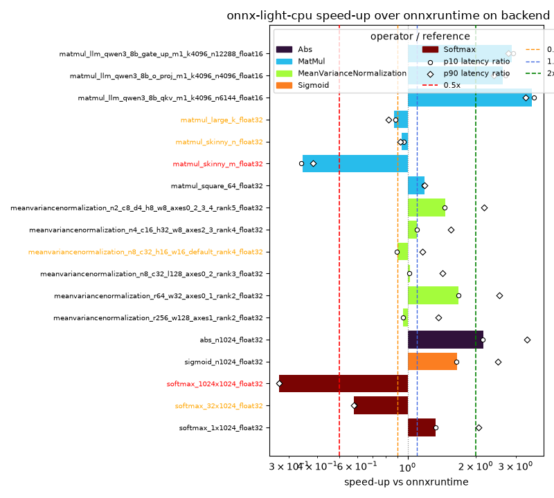

Note
Go to the end to download the full example code.
Benchmark backend test cases against ONNX Runtime#
onnx-light-cpu ships its own ONNX backend test cases – named test_cpu_*
– in a dedicated C++ registration library
(lib_onnx_light_cpu_backend_test, see onnx_light_cpu.register_backend_test_cases()).
Every case that has an accelerated kernel also has a TestMode.BENCHMARK
variant: the same operator and attributes, but with inputs large enough that a
single evaluation takes a measurable amount of time. This example collects
every test_cpu_*_benchmark case – across every operator and element type
onnx-light-cpu ships one for – and times each one through onnx-light
(with onnx-light-cpu’s accelerated kernel registered) and through ONNX
Runtime, using the exact same generated model and inputs for both.
Each case is also checked for correctness (both runtimes must agree, within
the case’s tolerance) and for kernel dispatch (the accelerated onnx-light-cpu
kernel, not onnx-light’s built-in reference kernel, must have run), the same
way unittests.python.test_kernels_e2e verifies these backend cases.
Setup#
Every test_cpu_*_benchmark case registered by onnx-light-cpu is
collected via onnx_light.onnx.backend.collect_test_cases_by_name()
(which accepts an ECMAScript regular expression), regardless of operator or
element type; --filter further narrows that set down when only a subset
is of interest and --max-cases controls how many matching cases run.
--threads applies the same explicit thread count to both runtimes.
onnx-light uses unpinned workers, matching ONNX Runtime when its thread count
is explicit, so the comparison does not mix different affinity policies.
import argparse
import gc
import os
import re
import time
from dataclasses import dataclass
import matplotlib.pyplot as plt
import numpy as np
import onnxruntime
import pandas as pd
from tqdm import tqdm
from onnx_light.onnx.backend import TestMode, collect_test_cases_by_name
from onnx_light.onnx.helper import tensor_dtype_to_np_dtype
from onnx_light.onnx.reference import ReferenceEvaluator
from onnx_light_cpu import (
clear_used_kernel_names,
has_backend_test_cases,
register_backend_test_cases,
register_kernels,
used_kernel_names,
)
_AVAILABLE_CPU_COUNT = (
len(os.sched_getaffinity(0)) if hasattr(os, "sched_getaffinity") else os.cpu_count() or 1
)
assert has_backend_test_cases(), (
"onnx-light-cpu must be built with onnx-light's backend test registry "
"(register_backend_test_cases binding unavailable)."
)
# ``--filter`` narrows the collected "test_cpu_*_benchmark" cases down to
# those whose name additionally matches a regular expression (e.g. ``--filter
# gemm`` keeps only Gemm cases, ``--filter '_2d_'`` keeps only 2-D cases
# across every operator). ``parse_known_args`` ignores unrelated arguments
# injected by pytest/sphinx-gallery when this file runs as a test or a
# documentation example.
parser = argparse.ArgumentParser(description=__doc__)
parser.add_argument(
"--filter",
default=None,
help="regular expression a case name must additionally match, e.g. '^test_cpu_gemm_'",
)
parser.add_argument(
"--max-case",
"--max-cases",
dest="max_cases",
type=int,
default=20,
help="maximum number of matching cases to run (default: 20; 0 disables the limit)",
)
parser.add_argument(
"--threads",
type=int,
default=_AVAILABLE_CPU_COUNT,
help="threads used by both runtimes (default: all available CPUs)",
)
parser.add_argument(
"-r",
"--repeat",
type=int,
default=10 * (os.cpu_count() or 1),
help="maximum measured batches per runtime and case (default: 10 per CPU)",
)
parser.add_argument(
"-w",
"--warmup",
type=int,
default=2 * (os.cpu_count() or 1),
help="untimed warm-up calls per runtime and case (default: 2 per CPU)",
)
parser.add_argument(
"-t",
"--max-repeat-time",
type=float,
default=1.0,
help="maximum cumulative measurement time per runtime and case in seconds (default: 1)",
)
parser.add_argument(
"--min-sample-time",
type=float,
default=5e-3,
help="target minimum duration of one batched timing sample in seconds (default: 0.005)",
)
parser.add_argument(
"--run-first",
choices=("ol", "ort"),
default="ol",
help="runtime measured first: ol for onnx-light-cpu or ort for ONNX Runtime (default: ol)",
)
parser.add_argument(
"--disable-spin",
action="store_true",
help="disable worker spin-wait in both runtimes (spin is enabled by default)",
)
args, unknown_args = parser.parse_known_args()
if args.max_cases < 0:
parser.error("--max-cases must be greater than or equal to 0")
if args.threads <= 0:
parser.error("--threads must be greater than 0")
if args.repeat <= 0:
parser.error("--repeat must be greater than 0")
if args.warmup < 0:
parser.error("--warmup must be greater than or equal to 0")
if args.max_repeat_time <= 0:
parser.error("--max-repeat-time must be greater than 0")
if args.min_sample_time <= 0:
parser.error("--min-sample-time must be greater than 0")
for unknown_arg in unknown_args:
if unknown_arg.startswith(("--repeat", "--warm", "--max-repeat-time", "--min-sample-time")):
parser.error(f"unrecognized timing option: {unknown_arg}")
_name_filter = re.compile(args.filter) if args.filter else None
def _to_numpy(tensor):
"""Decodes a backend test case ``Tensor`` into a numpy array."""
dtype = tensor_dtype_to_np_dtype(int(tensor.data_type))
shape = tuple(int(d) for d in tensor.shape)
return np.frombuffer(tensor.raw_data(), dtype=dtype).reshape(shape)
_CASE_GROUP_SUFFIXES = (
"bfloat16",
"float16",
"float32",
"float64",
"int8",
"int16",
"int32",
"int64",
"uint8",
"uint16",
"uint32",
"uint64",
"bool",
"benchmark",
)
def _case_group_key(name):
"""Derives a cheap, name-only grouping key used to spread ``--max-cases``
truncation across operators.
This must not touch ``tc.model``: building the ONNX model (and the
tensors it references) for every collected case -- rather than only for
the small subset that ``--max-cases`` keeps -- can exhaust memory on CI
runners once the backend test corpus grows. The real ``op_type`` for
each *selected* case is still derived from its model later, once, when
it is actually measured.
"""
stem = name
if stem.startswith("test_cpu_"):
stem = stem[len("test_cpu_") :]
tokens = stem.split("_")
while tokens and (
tokens[-1] in _CASE_GROUP_SUFFIXES or re.fullmatch(r"[a-z]?\d+", tokens[-1])
):
tokens.pop()
return "_".join(tokens) or stem
def _collect_cases():
"""Registers and collects every "test_cpu_*_benchmark" backend test case.
Every operator and element type onnx-light-cpu ships a BENCHMARK variant
for is included; ``--filter`` and ``--max-cases`` are the only further
restrictions applied here. When ``--max-cases`` truncates the collected
cases, the truncation round-robins across operators (instead of taking a
contiguous prefix of whatever order they were collected in) so a small
``--max-cases`` still yields a representative, multi-operator sample
rather than being dominated by whichever operator happens to sort first
or have the most benchmark variants -- e.g. Attention, which ONNX Runtime
rejects for several onnx-light-cpu benchmark cases (see below), would
otherwise fill the whole default selection and leave nothing comparable
to plot.
"""
register_backend_test_cases()
max_cases = (
10 if os.environ.get("UNITTEST_GOING", "0") in ("1", "true", "True") else args.max_cases
)
cases_by_group = {}
for tc in collect_test_cases_by_name(
"^test_cpu_.*_benchmark$",
mode=TestMode.BENCHMARK,
generate_benchmark_expected_outputs=False,
):
if _name_filter is not None and not _name_filter.search(tc.name):
continue
cases_by_group.setdefault(_case_group_key(tc.name), []).append(tc)
if not max_cases:
return [tc for group in cases_by_group.values() for tc in group]
cases = []
while len(cases) < max_cases and any(cases_by_group.values()):
for group_key in list(cases_by_group):
group = cases_by_group[group_key]
if not group:
del cases_by_group[group_key]
continue
cases.append(group.pop(0))
if len(cases) >= max_cases:
break
return cases
print("-- _collect_cases")
_CASES = _collect_cases()
def _format_no_cases_message(pattern):
message = (
f"no onnx-light-cpu BENCHMARK backend test cases were collected (filter={pattern!r})"
)
if pattern and any(character.isupper() for character in pattern):
message += (
"; backend test case names are usually lowercase and filters are case-sensitive"
)
return message
_no_cases_message = _format_no_cases_message(args.filter)
assert _CASES, _no_cases_message
print(f"-- collected {len(_CASES)} cases")
-- _collect_cases
-- collected 20 cases
Timing helper#
Each runtime is measured in its own phase, so its spinning worker pool cannot
perturb the other runtime. Short calls are grouped into batches so a sample
takes at least --min-sample-time when practical. The median plus the
10th/90th percentiles are retained. For batched calls, these percentiles
describe normalized batch averages rather than individual-call latency.
def measure(func, repeat, warmup, max_duration, min_sample_duration):
warmup_duration = 0.0
for _ in range(warmup):
start = time.perf_counter_ns()
func()
warmup_duration += (time.perf_counter_ns() - start) / 1e9
if warmup_duration >= max_duration:
break
calibration_samples = []
for _ in range(3):
start = time.perf_counter_ns()
func()
calibration_samples.append((time.perf_counter_ns() - start) / 1e9)
calibration = max(float(np.median(calibration_samples)), 1e-9)
target = min(min_sample_duration, max_duration)
max_batch_duration = min(max_duration, target * 10)
calls_per_sample = min(
max(1, int(np.ceil(target / calibration))),
max(1, int(max_batch_duration / calibration)),
10000,
)
samples = []
total_duration = 0.0
for _ in range(repeat):
start = time.perf_counter_ns()
for _ in range(calls_per_sample):
func()
duration = (time.perf_counter_ns() - start) / 1e9
samples.append(duration / calls_per_sample)
total_duration += duration
if total_duration >= max_duration:
break
return samples, calls_per_sample
def timing_summary(samples):
return (
float(np.median(samples)),
float(np.percentile(samples, 10)),
float(np.percentile(samples, 90)),
)
Run every case through onnx-light-cpu and ONNX Runtime#
register_kernels() installs the accelerated kernels in onnx-light’s
process-wide dispatch table before any of the onnx-light-cpu sessions below
run for the first time.
print("-- register_kernels")
register_kernels()
# Some onnx-light-cpu Attention benchmark cases (e.g. streaming past_key/
# past_value without materializing present_key/present_value, or FLOAT16/
# BFLOAT16 inputs) are rejected by ONNX Runtime -- either at session-creation
# time or while running -- even though onnx-light-cpu's kernel handles them
# fine. Rather than special-case those by name, any ONNX Runtime failure is
# caught here and the case is still timed/reported for onnx-light-cpu alone,
# with "n/a" standing in for the ONNX Runtime side.
#
# The runtimes are measured in separate phases. ``--run-first`` selects which
# phase runs first, making order sensitivity observable. Spin-wait stays
# enabled as part of normal runtime behavior unless ``--disable-spin`` is set.
print(
f"-- timing warmup={args.warmup} repeat={args.repeat} "
f"max_repeat_time={args.max_repeat_time:g}s "
f"min_sample_time={args.min_sample_time:g}s "
f"run_first={args.run_first} disable_spin={args.disable_spin}"
)
measurements = []
for tc in _CASES:
op_type = tc.model.graph.node[0].op_type
if tc.model.graph.initializer:
raise AssertionError(
f"{tc.name} contains an initializer; backend benchmarks must time runtime inputs"
)
input_names = [vi.name for vi in tc.model.graph.input]
ds = tc.data_sets[0]
feeds = {name: _to_numpy(t) for name, t in zip(input_names, ds.inputs, strict=True)}
measurements.append(
{
"op_type": op_type,
"name": tc.name,
"model": tc.model,
"model_bytes": tc.model.SerializeToString(),
"feeds": feeds,
"node_count": len(tc.model.graph.node),
"shapes": ",".join(
"x".join(str(d) for d in array.shape) or "scalar" for array in feeds.values()
),
"dtypes": ",".join(str(array.dtype) for array in feeds.values()),
}
)
def benchmark_light():
print("-- benchmark onnx-light-cpu")
cpu_execution = {"num_threads": args.threads, "affinity_policy": "none"}
if args.disable_spin:
cpu_execution["spin_policy"] = "park_immediately"
progress = tqdm(measurements, desc="benchmarking onnx-light-cpu", unit="case")
for measurement in progress:
progress.set_postfix_str(measurement["name"])
session = ReferenceEvaluator(
measurement["model"],
cpu_execution=cpu_execution,
)
clear_used_kernel_names()
measurement["light_out"] = [
np.array(output, copy=True) for output in session.run(None, measurement["feeds"])
]
expected_kernel = f"onnx_light_cpu::{measurement['op_type']}"
assert expected_kernel in used_kernel_names(), used_kernel_names()
def run(current=session, feeds=measurement["feeds"]):
return current.run(None, feeds)
samples, calls_per_sample = measure(
run,
args.repeat,
args.warmup,
args.max_repeat_time,
args.min_sample_time,
)
measurement["light_time"], measurement["light_p10"], measurement["light_p90"] = (
timing_summary(samples)
)
measurement["light_calls_per_sample"] = calls_per_sample
del run
del session
def benchmark_ort():
print("-- benchmark ONNX Runtime")
progress = tqdm(measurements, desc="benchmarking ONNX Runtime", unit="case")
for measurement in progress:
progress.set_postfix_str(measurement["name"])
measurement["ort_error"] = None
session = None
run = None
try:
session_options = onnxruntime.SessionOptions()
session_options.intra_op_num_threads = args.threads
session_options.inter_op_num_threads = 1
session_options.execution_mode = onnxruntime.ExecutionMode.ORT_SEQUENTIAL
if args.disable_spin:
session_options.add_session_config_entry("session.intra_op.allow_spinning", "0")
session = onnxruntime.InferenceSession(
measurement["model_bytes"],
sess_options=session_options,
providers=["CPUExecutionProvider"],
)
measurement["ort_out"] = session.run(None, measurement["feeds"])
def run(current=session, feeds=measurement["feeds"]):
return current.run(None, feeds)
samples, calls_per_sample = measure(
run,
args.repeat,
args.warmup,
args.max_repeat_time,
args.min_sample_time,
)
except Exception as exc: # noqa: BLE001 -- unsupported cases are reported as "n/a".
measurement["ort_error"] = str(exc).splitlines()[0][:40]
measurement["ort_time"] = None
measurement["ort_p10"] = None
measurement["ort_p90"] = None
measurement["ort_calls_per_sample"] = None
else:
measurement["ort_time"], measurement["ort_p10"], measurement["ort_p90"] = (
timing_summary(samples)
)
measurement["ort_calls_per_sample"] = calls_per_sample
finally:
del run
del session
runtime_phases = (
(benchmark_light, benchmark_ort)
if args.run_first == "ol"
else (benchmark_ort, benchmark_light)
)
for phase in runtime_phases:
phase()
gc.collect()
# The case's own tolerance compares against output generated by the accelerated
# kernel. ONNX Runtime may accumulate reductions in a different order, so the
# cross-runtime check uses its own scale-aware tolerance.
rows = []
for measurement in measurements:
if measurement["ort_time"] is not None:
reduction = max(
(max(array.shape) for array in measurement["feeds"].values() if array.ndim > 0),
default=1,
)
for actual, expected in zip(
measurement["light_out"], measurement["ort_out"], strict=True
):
if expected.dtype == np.bool_:
np.testing.assert_array_equal(actual, expected)
elif expected.dtype == np.float32 or expected.dtype == np.float64:
scale = float(np.abs(expected).max(initial=0.0))
noise = scale * float(np.finfo(expected.dtype).eps) * reduction**0.5
np.testing.assert_allclose(
actual.astype(np.float64),
expected.astype(np.float64),
rtol=1e-2,
atol=max(1e-3, (measurement["node_count"] - 1) * 5e-2, noise),
equal_nan=True,
)
rows.append(
(
measurement["op_type"],
measurement["name"],
measurement["shapes"],
measurement["dtypes"],
measurement["light_time"],
measurement["ort_time"],
measurement["ort_error"],
measurement["light_p10"],
measurement["light_p90"],
measurement["ort_p10"],
measurement["ort_p90"],
measurement["light_calls_per_sample"],
measurement["ort_calls_per_sample"],
)
)
# Print an aligned table once every case has run, since column widths (name,
# input shapes, dtypes) are not known ahead of time. Cases ONNX Runtime could
# not run (ort_time is None) show its error message instead of a timing/
# speed-up.
op_width = max(len(row[0]) for row in rows)
name_width = max(len(row[1]) for row in rows)
shapes_width = max(len(row[2]) for row in rows)
dtypes_width = max(len(row[3]) for row in rows)
for (
op_type,
name,
shapes,
dtypes,
light_time,
ort_time,
ort_error,
light_p10,
light_p90,
ort_p10,
ort_p90,
light_calls_per_sample,
ort_calls_per_sample,
) in rows:
ort_str = f"{ort_time * 1e6:10.2f} us" if ort_time is not None else f"{'error':>13}"
speedup_str = f"{ort_time / light_time:6.2f}x" if ort_time is not None else f"{'n/a':>7}"
ort_spread = (
f"{ort_p10 * 1e6:.2f}, {ort_p90 * 1e6:.2f}"
if ort_p10 is not None and ort_p90 is not None
else "n/a"
)
print(
f"{op_type:>{op_width}} | {name:<{name_width}} | shapes={shapes:<{shapes_width}} | "
f"dtype={dtypes:<{dtypes_width}} | "
f"onnx-light-cpu={light_time * 1e6:10.2f} us "
f"[{light_p10 * 1e6:.2f}, {light_p90 * 1e6:.2f}] "
f"({light_calls_per_sample} calls/sample) | "
f"onnxruntime={ort_str} [{ort_spread}] "
f"({ort_calls_per_sample or 'n/a'} calls/sample) | speed-up={speedup_str}"
+ (f" | onnxruntime_error={ort_error}" if ort_error is not None else "")
)
-- register_kernels
-- timing warmup=8 repeat=40 max_repeat_time=1s min_sample_time=0.005s run_first=ol disable_spin=False
-- benchmark onnx-light-cpu
benchmarking onnx-light-cpu: 0%| | 0/20 [00:00<?, ?case/s]
benchmarking onnx-light-cpu: 0%| | 0/20 [00:00<?, ?case/s, test_cpu_swiglu_n1024_float32_benchmark]
benchmarking onnx-light-cpu: 5%|▌ | 1/20 [00:00<00:03, 5.35case/s, test_cpu_swiglu_n1024_float32_benchmark]
benchmarking onnx-light-cpu: 5%|▌ | 1/20 [00:00<00:03, 5.35case/s, test_cpu_softmax_1x1024_float32_benchmark]
benchmarking onnx-light-cpu: 10%|█ | 2/20 [00:00<00:03, 5.23case/s, test_cpu_softmax_1x1024_float32_benchmark]
benchmarking onnx-light-cpu: 10%|█ | 2/20 [00:00<00:03, 5.23case/s, test_cpu_softmax_32x1024_float32_benchmark]
benchmarking onnx-light-cpu: 15%|█▌ | 3/20 [00:00<00:03, 5.57case/s, test_cpu_softmax_32x1024_float32_benchmark]
benchmarking onnx-light-cpu: 15%|█▌ | 3/20 [00:00<00:03, 5.57case/s, test_cpu_softmax_1024x1024_float32_benchmark]
benchmarking onnx-light-cpu: 20%|██ | 4/20 [00:00<00:03, 5.09case/s, test_cpu_softmax_1024x1024_float32_benchmark]
benchmarking onnx-light-cpu: 20%|██ | 4/20 [00:00<00:03, 5.09case/s, test_cpu_sigmoid_n1024_float32_benchmark]
benchmarking onnx-light-cpu: 25%|██▌ | 5/20 [00:00<00:02, 5.15case/s, test_cpu_sigmoid_n1024_float32_benchmark]
benchmarking onnx-light-cpu: 25%|██▌ | 5/20 [00:00<00:02, 5.15case/s, test_cpu_abs_n1024_float32_benchmark]
benchmarking onnx-light-cpu: 30%|███ | 6/20 [00:01<00:02, 5.23case/s, test_cpu_abs_n1024_float32_benchmark]
benchmarking onnx-light-cpu: 30%|███ | 6/20 [00:01<00:02, 5.23case/s, test_cpu_meanvariancenormalization_r256_w128_axes1_rank2_float32_benchmark]
benchmarking onnx-light-cpu: 35%|███▌ | 7/20 [00:01<00:02, 5.12case/s, test_cpu_meanvariancenormalization_r256_w128_axes1_rank2_float32_benchmark]
benchmarking onnx-light-cpu: 35%|███▌ | 7/20 [00:01<00:02, 5.12case/s, test_cpu_meanvariancenormalization_r64_w32_axes0_1_rank2_float32_benchmark]
benchmarking onnx-light-cpu: 40%|████ | 8/20 [00:01<00:02, 5.19case/s, test_cpu_meanvariancenormalization_r64_w32_axes0_1_rank2_float32_benchmark]
benchmarking onnx-light-cpu: 40%|████ | 8/20 [00:01<00:02, 5.19case/s, test_cpu_meanvariancenormalization_n8_c32_l128_axes0_2_rank3_float32_benchmark]
benchmarking onnx-light-cpu: 45%|████▌ | 9/20 [00:01<00:02, 5.09case/s, test_cpu_meanvariancenormalization_n8_c32_l128_axes0_2_rank3_float32_benchmark]
benchmarking onnx-light-cpu: 45%|████▌ | 9/20 [00:01<00:02, 5.09case/s, test_cpu_meanvariancenormalization_n8_c32_h16_w16_default_rank4_float32_benchmark]
benchmarking onnx-light-cpu: 50%|█████ | 10/20 [00:01<00:01, 5.02case/s, test_cpu_meanvariancenormalization_n8_c32_h16_w16_default_rank4_float32_benchmark]
benchmarking onnx-light-cpu: 50%|█████ | 10/20 [00:01<00:01, 5.02case/s, test_cpu_meanvariancenormalization_n4_c16_h32_w8_axes2_3_rank4_float32_benchmark]
benchmarking onnx-light-cpu: 55%|█████▌ | 11/20 [00:02<00:01, 5.03case/s, test_cpu_meanvariancenormalization_n4_c16_h32_w8_axes2_3_rank4_float32_benchmark]
benchmarking onnx-light-cpu: 55%|█████▌ | 11/20 [00:02<00:01, 5.03case/s, test_cpu_meanvariancenormalization_n2_c8_d4_h8_w8_axes0_2_3_4_rank5_float32_benchmark]
benchmarking onnx-light-cpu: 60%|██████ | 12/20 [00:02<00:01, 5.04case/s, test_cpu_meanvariancenormalization_n2_c8_d4_h8_w8_axes0_2_3_4_rank5_float32_benchmark]
benchmarking onnx-light-cpu: 60%|██████ | 12/20 [00:02<00:01, 5.04case/s, test_cpu_meanvariancenormalization_n4_c16_h8_w8_default_rank4_float16_benchmark]
benchmarking onnx-light-cpu: 65%|██████▌ | 13/20 [00:02<00:01, 5.06case/s, test_cpu_meanvariancenormalization_n4_c16_h8_w8_default_rank4_float16_benchmark]
benchmarking onnx-light-cpu: 65%|██████▌ | 13/20 [00:02<00:01, 5.06case/s, test_cpu_matmul_square_64_float32_benchmark]
benchmarking onnx-light-cpu: 70%|███████ | 14/20 [00:02<00:01, 5.04case/s, test_cpu_matmul_square_64_float32_benchmark]
benchmarking onnx-light-cpu: 70%|███████ | 14/20 [00:02<00:01, 5.04case/s, test_cpu_matmul_skinny_m_float32_benchmark]
benchmarking onnx-light-cpu: 75%|███████▌ | 15/20 [00:03<00:01, 3.79case/s, test_cpu_matmul_skinny_m_float32_benchmark]
benchmarking onnx-light-cpu: 75%|███████▌ | 15/20 [00:03<00:01, 3.79case/s, test_cpu_matmul_skinny_n_float32_benchmark]
benchmarking onnx-light-cpu: 80%|████████ | 16/20 [00:03<00:01, 3.90case/s, test_cpu_matmul_skinny_n_float32_benchmark]
benchmarking onnx-light-cpu: 80%|████████ | 16/20 [00:03<00:01, 3.90case/s, test_cpu_matmul_large_k_float32_benchmark]
benchmarking onnx-light-cpu: 85%|████████▌ | 17/20 [00:03<00:00, 4.13case/s, test_cpu_matmul_large_k_float32_benchmark]
benchmarking onnx-light-cpu: 85%|████████▌ | 17/20 [00:03<00:00, 4.13case/s, test_cpu_matmul_llm_qwen3_8b_qkv_m1_k4096_n6144_float16_benchmark]
benchmarking onnx-light-cpu: 90%|█████████ | 18/20 [00:04<00:00, 3.37case/s, test_cpu_matmul_llm_qwen3_8b_qkv_m1_k4096_n6144_float16_benchmark]
benchmarking onnx-light-cpu: 90%|█████████ | 18/20 [00:04<00:00, 3.37case/s, test_cpu_matmul_llm_qwen3_8b_o_proj_m1_k4096_n4096_float16_benchmark]
benchmarking onnx-light-cpu: 95%|█████████▌| 19/20 [00:04<00:00, 3.10case/s, test_cpu_matmul_llm_qwen3_8b_o_proj_m1_k4096_n4096_float16_benchmark]
benchmarking onnx-light-cpu: 95%|█████████▌| 19/20 [00:04<00:00, 3.10case/s, test_cpu_matmul_llm_qwen3_8b_gate_up_m1_k4096_n12288_float16_benchmark]
benchmarking onnx-light-cpu: 100%|██████████| 20/20 [00:05<00:00, 1.87case/s, test_cpu_matmul_llm_qwen3_8b_gate_up_m1_k4096_n12288_float16_benchmark]
benchmarking onnx-light-cpu: 100%|██████████| 20/20 [00:05<00:00, 3.68case/s, test_cpu_matmul_llm_qwen3_8b_gate_up_m1_k4096_n12288_float16_benchmark]
-- benchmark ONNX Runtime
benchmarking ONNX Runtime: 0%| | 0/20 [00:00<?, ?case/s]
benchmarking ONNX Runtime: 0%| | 0/20 [00:00<?, ?case/s, test_cpu_swiglu_n1024_float32_benchmark]
benchmarking ONNX Runtime: 0%| | 0/20 [00:00<?, ?case/s, test_cpu_softmax_1x1024_float32_benchmark]
benchmarking ONNX Runtime: 10%|█ | 2/20 [00:00<00:01, 13.78case/s, test_cpu_softmax_1x1024_float32_benchmark]
benchmarking ONNX Runtime: 10%|█ | 2/20 [00:00<00:01, 13.78case/s, test_cpu_softmax_32x1024_float32_benchmark]
benchmarking ONNX Runtime: 10%|█ | 2/20 [00:00<00:01, 13.78case/s, test_cpu_softmax_1024x1024_float32_benchmark]
benchmarking ONNX Runtime: 20%|██ | 4/20 [00:00<00:02, 6.84case/s, test_cpu_softmax_1024x1024_float32_benchmark]
benchmarking ONNX Runtime: 20%|██ | 4/20 [00:00<00:02, 6.84case/s, test_cpu_sigmoid_n1024_float32_benchmark]
benchmarking ONNX Runtime: 25%|██▌ | 5/20 [00:00<00:02, 6.87case/s, test_cpu_sigmoid_n1024_float32_benchmark]
benchmarking ONNX Runtime: 25%|██▌ | 5/20 [00:00<00:02, 6.87case/s, test_cpu_abs_n1024_float32_benchmark]
benchmarking ONNX Runtime: 30%|███ | 6/20 [00:00<00:02, 6.97case/s, test_cpu_abs_n1024_float32_benchmark]
benchmarking ONNX Runtime: 30%|███ | 6/20 [00:00<00:02, 6.97case/s, test_cpu_meanvariancenormalization_r256_w128_axes1_rank2_float32_benchmark]
benchmarking ONNX Runtime: 35%|███▌ | 7/20 [00:00<00:01, 6.83case/s, test_cpu_meanvariancenormalization_r256_w128_axes1_rank2_float32_benchmark]
benchmarking ONNX Runtime: 35%|███▌ | 7/20 [00:00<00:01, 6.83case/s, test_cpu_meanvariancenormalization_r64_w32_axes0_1_rank2_float32_benchmark]
benchmarking ONNX Runtime: 40%|████ | 8/20 [00:01<00:01, 6.77case/s, test_cpu_meanvariancenormalization_r64_w32_axes0_1_rank2_float32_benchmark]
benchmarking ONNX Runtime: 40%|████ | 8/20 [00:01<00:01, 6.77case/s, test_cpu_meanvariancenormalization_n8_c32_l128_axes0_2_rank3_float32_benchmark]
benchmarking ONNX Runtime: 45%|████▌ | 9/20 [00:01<00:01, 6.59case/s, test_cpu_meanvariancenormalization_n8_c32_l128_axes0_2_rank3_float32_benchmark]
benchmarking ONNX Runtime: 45%|████▌ | 9/20 [00:01<00:01, 6.59case/s, test_cpu_meanvariancenormalization_n8_c32_h16_w16_default_rank4_float32_benchmark]
benchmarking ONNX Runtime: 50%|█████ | 10/20 [00:01<00:01, 6.46case/s, test_cpu_meanvariancenormalization_n8_c32_h16_w16_default_rank4_float32_benchmark]
benchmarking ONNX Runtime: 50%|█████ | 10/20 [00:01<00:01, 6.46case/s, test_cpu_meanvariancenormalization_n4_c16_h32_w8_axes2_3_rank4_float32_benchmark]
benchmarking ONNX Runtime: 55%|█████▌ | 11/20 [00:01<00:01, 6.44case/s, test_cpu_meanvariancenormalization_n4_c16_h32_w8_axes2_3_rank4_float32_benchmark]
benchmarking ONNX Runtime: 55%|█████▌ | 11/20 [00:01<00:01, 6.44case/s, test_cpu_meanvariancenormalization_n2_c8_d4_h8_w8_axes0_2_3_4_rank5_float32_benchmark]
benchmarking ONNX Runtime: 60%|██████ | 12/20 [00:01<00:01, 6.58case/s, test_cpu_meanvariancenormalization_n2_c8_d4_h8_w8_axes0_2_3_4_rank5_float32_benchmark]
benchmarking ONNX Runtime: 60%|██████ | 12/20 [00:01<00:01, 6.58case/s, test_cpu_meanvariancenormalization_n4_c16_h8_w8_default_rank4_float16_benchmark]
benchmarking ONNX Runtime: 60%|██████ | 12/20 [00:01<00:01, 6.58case/s, test_cpu_matmul_square_64_float32_benchmark]
benchmarking ONNX Runtime: 70%|███████ | 14/20 [00:01<00:00, 8.02case/s, test_cpu_matmul_square_64_float32_benchmark]
benchmarking ONNX Runtime: 70%|███████ | 14/20 [00:01<00:00, 8.02case/s, test_cpu_matmul_skinny_m_float32_benchmark]
benchmarking ONNX Runtime: 75%|███████▌ | 15/20 [00:02<00:00, 6.17case/s, test_cpu_matmul_skinny_m_float32_benchmark]
benchmarking ONNX Runtime: 75%|███████▌ | 15/20 [00:02<00:00, 6.17case/s, test_cpu_matmul_skinny_n_float32_benchmark]
benchmarking ONNX Runtime: 80%|████████ | 16/20 [00:02<00:00, 5.59case/s, test_cpu_matmul_skinny_n_float32_benchmark]
benchmarking ONNX Runtime: 80%|████████ | 16/20 [00:02<00:00, 5.59case/s, test_cpu_matmul_large_k_float32_benchmark]
benchmarking ONNX Runtime: 85%|████████▌ | 17/20 [00:02<00:00, 5.35case/s, test_cpu_matmul_large_k_float32_benchmark]
benchmarking ONNX Runtime: 85%|████████▌ | 17/20 [00:02<00:00, 5.35case/s, test_cpu_matmul_llm_qwen3_8b_qkv_m1_k4096_n6144_float16_benchmark]
benchmarking ONNX Runtime: 90%|█████████ | 18/20 [00:04<00:01, 1.91case/s, test_cpu_matmul_llm_qwen3_8b_qkv_m1_k4096_n6144_float16_benchmark]
benchmarking ONNX Runtime: 90%|█████████ | 18/20 [00:04<00:01, 1.91case/s, test_cpu_matmul_llm_qwen3_8b_o_proj_m1_k4096_n4096_float16_benchmark]
benchmarking ONNX Runtime: 95%|█████████▌| 19/20 [00:05<00:00, 1.51case/s, test_cpu_matmul_llm_qwen3_8b_o_proj_m1_k4096_n4096_float16_benchmark]
benchmarking ONNX Runtime: 95%|█████████▌| 19/20 [00:05<00:00, 1.51case/s, test_cpu_matmul_llm_qwen3_8b_gate_up_m1_k4096_n12288_float16_benchmark]
benchmarking ONNX Runtime: 100%|██████████| 20/20 [00:06<00:00, 1.03case/s, test_cpu_matmul_llm_qwen3_8b_gate_up_m1_k4096_n12288_float16_benchmark]
benchmarking ONNX Runtime: 100%|██████████| 20/20 [00:06<00:00, 2.95case/s, test_cpu_matmul_llm_qwen3_8b_gate_up_m1_k4096_n12288_float16_benchmark]
SwiGLU | test_cpu_swiglu_n1024_float32_benchmark | shapes=1024,1024 | dtype=float32,float32 | onnx-light-cpu= 3.81 us [3.79, 4.72] (1135 calls/sample) | onnxruntime= error [n/a] (n/a calls/sample) | speed-up= n/a | onnxruntime_error=[ONNXRuntimeError] : 1 : FAIL : /onnxrun
Softmax | test_cpu_softmax_1x1024_float32_benchmark | shapes=1x1024 | dtype=float32 | onnx-light-cpu= 4.42 us [4.40, 4.44] (1081 calls/sample) | onnxruntime= 5.88 us [5.86, 9.13] (521 calls/sample) | speed-up= 1.33x
Softmax | test_cpu_softmax_32x1024_float32_benchmark | shapes=32x1024 | dtype=float32 | onnx-light-cpu= 31.58 us [31.22, 31.89] (128 calls/sample) | onnxruntime= 18.32 us [18.25, 18.45] (262 calls/sample) | speed-up= 0.58x
Softmax | test_cpu_softmax_1024x1024_float32_benchmark | shapes=1024x1024 | dtype=float32 | onnx-light-cpu= 753.51 us [749.82, 763.09] (7 calls/sample) | onnxruntime= 204.05 us [202.86, 206.94] (24 calls/sample) | speed-up= 0.27x
Sigmoid | test_cpu_sigmoid_n1024_float32_benchmark | shapes=1024 | dtype=float32 | onnx-light-cpu= 3.53 us [3.52, 3.57] (1331 calls/sample) | onnxruntime= 5.81 us [5.78, 8.97] (525 calls/sample) | speed-up= 1.65x
Abs | test_cpu_abs_n1024_float32_benchmark | shapes=1024 | dtype=float32 | onnx-light-cpu= 2.56 us [2.55, 2.58] (1770 calls/sample) | onnxruntime= 5.55 us [5.47, 8.67] (526 calls/sample) | speed-up= 2.17x
MeanVarianceNormalization | test_cpu_meanvariancenormalization_r256_w128_axes1_rank2_float32_benchmark | shapes=256x128 | dtype=float32 | onnx-light-cpu= 32.26 us [32.18, 32.55] (155 calls/sample) | onnxruntime= 30.81 us [30.62, 44.59] (109 calls/sample) | speed-up= 0.95x
MeanVarianceNormalization | test_cpu_meanvariancenormalization_r64_w32_axes0_1_rank2_float32_benchmark | shapes=64x32 | dtype=float32 | onnx-light-cpu= 4.24 us [4.22, 4.26] (1088 calls/sample) | onnxruntime= 7.11 us [7.07, 10.83] (454 calls/sample) | speed-up= 1.68x
MeanVarianceNormalization | test_cpu_meanvariancenormalization_n8_c32_l128_axes0_2_rank3_float32_benchmark | shapes=8x32x128 | dtype=float32 | onnx-light-cpu= 43.14 us [42.93, 43.34] (117 calls/sample) | onnxruntime= 44.21 us [43.61, 61.99] (81 calls/sample) | speed-up= 1.02x
MeanVarianceNormalization | test_cpu_meanvariancenormalization_n8_c32_h16_w16_default_rank4_float32_benchmark | shapes=8x32x16x16 | dtype=float32 | onnx-light-cpu= 83.98 us [83.77, 85.06] (60 calls/sample) | onnxruntime= 75.93 us [75.03, 99.23] (48 calls/sample) | speed-up= 0.90x
MeanVarianceNormalization | test_cpu_meanvariancenormalization_n4_c16_h32_w8_axes2_3_rank4_float32_benchmark | shapes=4x16x32x8 | dtype=float32 | onnx-light-cpu= 16.67 us [16.63, 16.76] (294 calls/sample) | onnxruntime= 18.30 us [18.21, 26.01] (189 calls/sample) | speed-up= 1.10x
MeanVarianceNormalization | test_cpu_meanvariancenormalization_n2_c8_d4_h8_w8_axes0_2_3_4_rank5_float32_benchmark | shapes=2x8x4x8x8 | dtype=float32 | onnx-light-cpu= 7.80 us [7.78, 7.89] (624 calls/sample) | onnxruntime= 11.46 us [11.38, 17.17] (270 calls/sample) | speed-up= 1.47x
MeanVarianceNormalization | test_cpu_meanvariancenormalization_n4_c16_h8_w8_default_rank4_float16_benchmark | shapes=4x16x8x8 | dtype=float16 | onnx-light-cpu= 26.50 us [26.42, 26.82] (182 calls/sample) | onnxruntime= error [n/a] (n/a calls/sample) | speed-up= n/a | onnxruntime_error=[ONNXRuntimeError] : 1 : FAIL : Type Err
MatMul | test_cpu_matmul_square_64_float32_benchmark | shapes=64x64,64x64 | dtype=float32,float32 | onnx-light-cpu= 13.57 us [13.53, 13.62] (365 calls/sample) | onnxruntime= 16.08 us [15.95, 16.23] (282 calls/sample) | speed-up= 1.19x
MatMul | test_cpu_matmul_skinny_m_float32_benchmark | shapes=1x4096,4096x4096 | dtype=float32,float32 | onnx-light-cpu= 4444.47 us [4312.02, 4581.04] (2 calls/sample) | onnxruntime= 1528.24 us [1463.49, 1753.77] (4 calls/sample) | speed-up= 0.34x
MatMul | test_cpu_matmul_skinny_n_float32_benchmark | shapes=4096x4096,4096x1 | dtype=float32,float32 | onnx-light-cpu= 1098.77 us [1051.05, 1175.57] (5 calls/sample) | onnxruntime= 1036.56 us [1009.16, 1090.17] (5 calls/sample) | speed-up= 0.94x
MatMul | test_cpu_matmul_large_k_float32_benchmark | shapes=32x8192,8192x32 | dtype=float32,float32 | onnx-light-cpu= 200.15 us [195.03, 221.00] (25 calls/sample) | onnxruntime= 174.06 us [172.86, 182.62] (29 calls/sample) | speed-up= 0.87x
MatMul | test_cpu_matmul_llm_qwen3_8b_qkv_m1_k4096_n6144_float16_benchmark | shapes=1x1x4096,4096x6144 | dtype=float16,float16 | onnx-light-cpu= 8023.18 us [7828.52, 8568.93] (1 calls/sample) | onnxruntime= 28411.27 us [28352.14, 28487.88] (1 calls/sample) | speed-up= 3.54x
MatMul | test_cpu_matmul_llm_qwen3_8b_o_proj_m1_k4096_n4096_float16_benchmark | shapes=1x1x4096,4096x4096 | dtype=float16,float16 | onnx-light-cpu= 7172.41 us [6953.10, 7977.97] (1 calls/sample) | onnxruntime= 18868.93 us [18832.51, 19155.25] (1 calls/sample) | speed-up= 2.63x
MatMul | test_cpu_matmul_llm_qwen3_8b_gate_up_m1_k4096_n12288_float16_benchmark | shapes=1x1x4096,4096x12288 | dtype=float16,float16 | onnx-light-cpu= 19657.58 us [19363.20, 20430.01] (1 calls/sample) | onnxruntime= 56775.63 us [56658.73, 56991.13] (1 calls/sample) | speed-up= 2.89x
Excel export#
The full results table – one row per benchmark case – is also written to
an .xlsx workbook so it can be inspected, filtered, or archived outside
this script, alongside the printed table and the plot below.
results_frame = pd.DataFrame(
[
{
"operator": op_type,
"case": name,
"input_shapes": shapes,
"input_dtypes": dtypes,
"onnx_light_cpu_us": light_time * 1e6,
"onnx_light_cpu_p10_us": light_p10 * 1e6,
"onnx_light_cpu_p90_us": light_p90 * 1e6,
"onnxruntime_us": ort_time * 1e6 if ort_time is not None else None,
"onnxruntime_p10_us": ort_p10 * 1e6 if ort_p10 is not None else None,
"onnxruntime_p90_us": ort_p90 * 1e6 if ort_p90 is not None else None,
"speed_up": ort_time / light_time if ort_time is not None else None,
"onnx_light_cpu_calls_per_sample": light_calls_per_sample,
"onnxruntime_calls_per_sample": ort_calls_per_sample,
"onnxruntime_error": ort_error,
}
for (
op_type,
name,
shapes,
dtypes,
light_time,
ort_time,
ort_error,
light_p10,
light_p90,
ort_p10,
ort_p90,
light_calls_per_sample,
ort_calls_per_sample,
) in rows
]
)
results_frame.to_excel("plot_backend_cases_benchmark.xlsx", index=False)
Plot the speed-ups#
One bar per case, grouped and colored by operator, starts at the 1x baseline
and ends at onnx-light-cpu’s speed-up over ONNX Runtime. Bars extend right
when onnx-light-cpu is faster and left when it is slower.
A circle and diamond show the ratios between the runtimes’ p10 and p90
latencies for the same case. These are ratios of independently measured
latency percentiles, not percentiles of paired speed-up samples. Vertical
reference lines at 0.5x, 0.9x, 1.1x, and 2x remain in view.
The x-axis is logarithmic so a speed-up and its reciprocal are equidistant
from the 1 baseline. Cases ONNX Runtime failed to run (ort_time is
None, see the try/except above) are left out of the plot – they have no
speed-up to show – but not out of the table/xlsx output above, where their
error is still reported. If every case was rejected or failed, there is
nothing to plot: prepare_plot_data() raises rather than silently
rendering an empty chart, since that would look identical to a build that
ran fine.
class NoPlottableCasesError(RuntimeError):
"""Raised when no collected row has a comparable ONNX Runtime timing.
A chart with zero bars is not a useful (nor a correct) rendering of "no
comparable case was found": it looks identical to "the build silently
produced an empty page". Raising here instead turns that situation into a
build failure with the offending case names/errors attached.
"""
@dataclass
class PlotData:
"""Everything the chart needs, derived once from the plottable rows."""
plotted_rows: list
labels: list
speedups: np.ndarray
p10_speedups: np.ndarray
p90_speedups: np.ndarray
colors: list
colors_by_op_type: dict
def _short_label(name):
"""Strips the common ``test_cpu_*_benchmark`` case-name affixes."""
label = name.removeprefix("test_cpu_")
return label.removesuffix("_benchmark")
def prepare_plot_data(rows):
"""Turns collected benchmark ``rows`` into the values the chart plots.
The first seven row fields are ``(op_type, name, shapes, dtypes,
light_time, ort_time, ort_error)``; timing percentiles and batching
metadata follow them. Rows whose ``ort_time`` (index 5) is ``None`` are
excluded from the returned plot data. Raises
:class:`NoPlottableCasesError` -- naming every rejected case and its error
-- when that leaves nothing to plot, rather than letting the caller render
an empty chart.
"""
plotted_rows = [row for row in rows if row[5] is not None]
if not plotted_rows:
if rows:
details = "; ".join(f"{row[1]} ({row[6] or 'no error message'})" for row in rows)
else:
details = "no benchmark case was collected"
raise NoPlottableCasesError(
"no benchmark case produced a comparable ONNX Runtime timing; every "
f"collected case was rejected or failed: {details}"
)
unique_op_types = sorted({row[0] for row in plotted_rows})
color_map = plt.get_cmap("turbo", len(unique_op_types))
colors_by_op_type = {
op_type: color_map(index) for index, op_type in enumerate(unique_op_types)
}
labels = [_short_label(row[1]) for row in plotted_rows]
speedups = np.array([row[5] / row[4] for row in plotted_rows])
p10_speedups = np.array([row[9] / row[7] for row in plotted_rows])
p90_speedups = np.array([row[10] / row[8] for row in plotted_rows])
colors = [colors_by_op_type[row[0]] for row in plotted_rows]
return PlotData(
plotted_rows=plotted_rows,
labels=labels,
speedups=speedups,
p10_speedups=p10_speedups,
p90_speedups=p90_speedups,
colors=colors,
colors_by_op_type=colors_by_op_type,
)
_plot_data = prepare_plot_data(rows)
fig, ax = plt.subplots(figsize=(8, max(5, 0.4 * len(_plot_data.plotted_rows))))
positions = np.arange(len(_plot_data.plotted_rows))
ax.barh(
positions,
_plot_data.speedups - 1.0,
left=1.0,
color=_plot_data.colors,
)
half_line = ax.axvline(0.5, color="red", linewidth=1.2, linestyle="--", zorder=4)
slow_margin_line = ax.axvline(0.9, color="darkorange", linewidth=1.0, linestyle="--", zorder=4)
ax.axvline(1.0, color="grey", linewidth=0.8, linestyle=":", zorder=4)
fast_margin_line = ax.axvline(1.1, color="royalblue", linewidth=1.0, linestyle="--", zorder=4)
double_line = ax.axvline(2.0, color="green", linewidth=1.2, linestyle="--", zorder=4)
p10_handle = ax.scatter(
_plot_data.p10_speedups,
positions,
marker="o",
s=20,
facecolors="white",
edgecolors="black",
linewidths=0.8,
zorder=5,
)
p90_handle = ax.scatter(
_plot_data.p90_speedups,
positions,
marker="D",
s=20,
facecolors="white",
edgecolors="black",
linewidths=0.8,
zorder=5,
)
ax.set_xscale("log")
all_speedups = np.concatenate(
(_plot_data.speedups, _plot_data.p10_speedups, _plot_data.p90_speedups)
)
ax.set_xlim(min(0.45, float(all_speedups.min()) / 1.1), max(2.2, float(all_speedups.max()) * 1.1))
ax.set_yticks(positions, _plot_data.labels, fontsize=7)
for tick_label, speedup in zip(ax.get_yticklabels(), _plot_data.speedups, strict=True):
if speedup <= 0.5:
tick_label.set_color("red")
elif speedup < 0.95:
tick_label.set_color("orange")
ax.set_xlabel("speed-up vs onnxruntime")
ax.set_title("onnx-light-cpu speed-up over onnxruntime on backend cases")
handles = [
plt.Rectangle((0, 0), 1, 1, color=color) for color in _plot_data.colors_by_op_type.values()
]
handles.extend(
(
p10_handle,
p90_handle,
half_line,
slow_margin_line,
fast_margin_line,
double_line,
)
)
legend_labels = [
*_plot_data.colors_by_op_type.keys(),
"p10 latency ratio",
"p90 latency ratio",
"0.5x",
"0.9x",
"1.1x",
"2x",
]
ax.legend(
handles,
legend_labels,
title="operator / reference",
loc="upper left",
fontsize=8,
ncols=3,
)
fig.tight_layout()
fig.savefig("plot_backend_cases_benchmark.png")
plt.show()

Total running time of the script: (0 minutes 19.290 seconds)